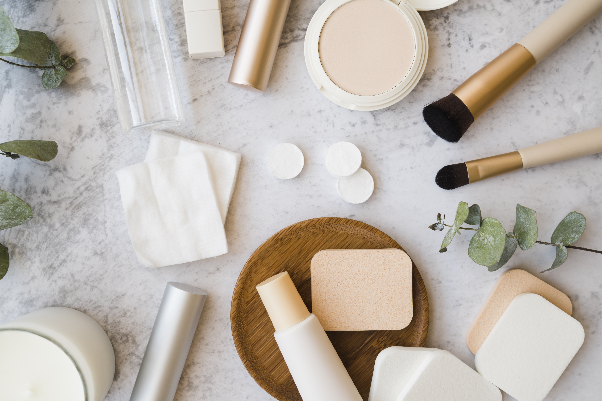
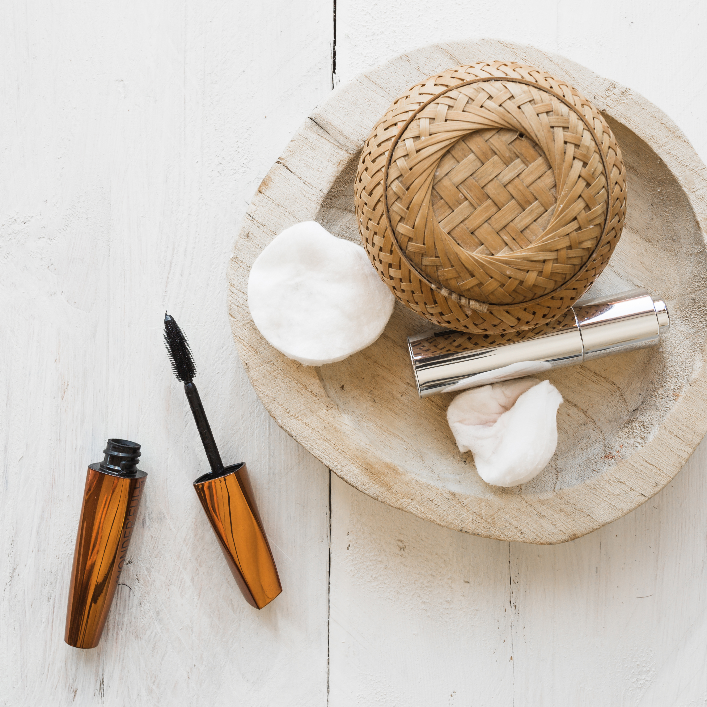
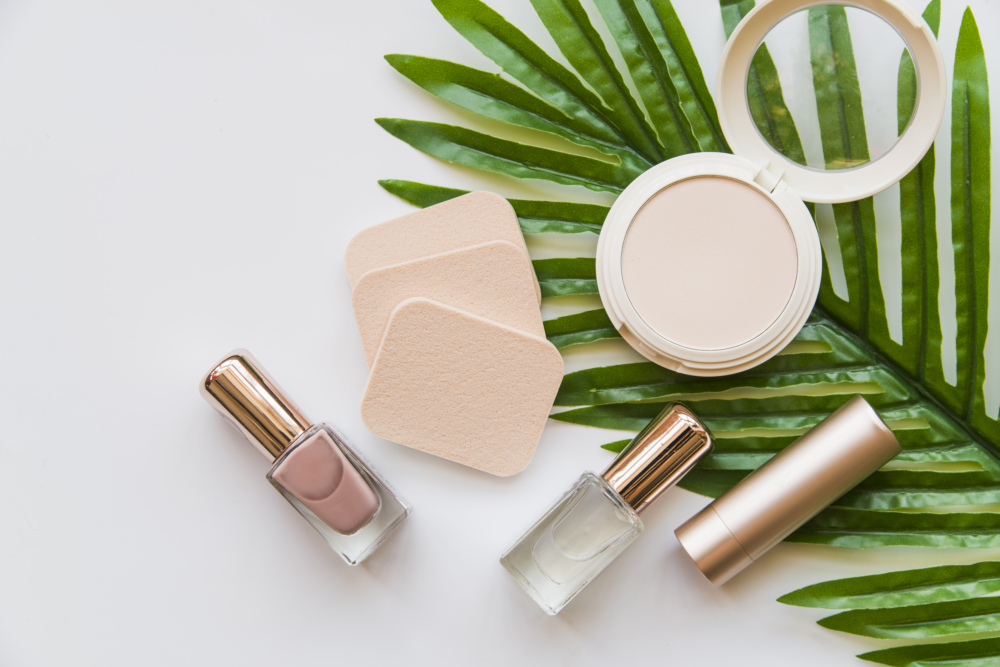
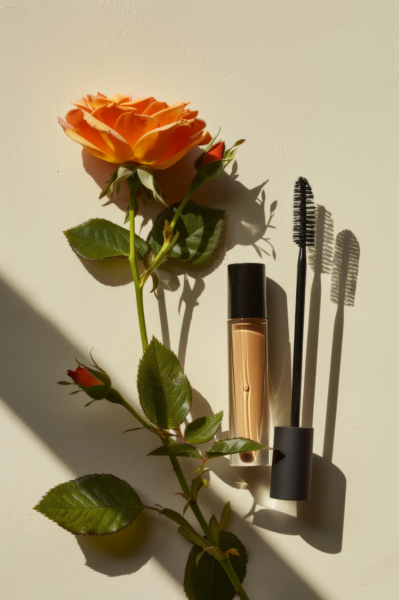

Adicione R$99,99 para frete grátis
Seu carrinho está vazio

A maquiagem natural vem ganhando espaço por unir estética e responsabilidade ambiental.
Produtos com ingredientes de origem vegetal, livres de parabenos e substâncias tóxicas, oferecem um cuidado mais suave para a pele e menos agressivo ao meio ambiente.
Além disso, muitas marcas estão investindo em embalagens recicláveis e processos de produção sustentáveis. Escolher maquiagem natural é mais do que uma tendência — é um posicionamento consciente sobre o tipo de impacto que queremos causar no mundo.
Beleza de verdade começa com escolhas responsáveis.

Um dos maiores desafios da indústria cosmética é o excesso de plástico.
Por isso, marcas sustentáveis estão inovando com embalagens biodegradáveis, refis reutilizáveis e materiais reciclados.
Optar por produtos com refil, por exemplo, reduz significativamente o descarte de resíduos. Pequenas decisões no momento da compra ajudam a diminuir o impacto ambiental sem abrir mão da qualidade.
Consumir com consciência transforma o mercado.

Os termos cruelty-free e vegano ganharam destaque no universo da maquiagem — você sabe o que eles significam?
Produtos cruelty-free são aqueles que não realizam testes em animais, enquanto os veganos não utilizam ingredientes de origem animal em sua composição.
Cada vez mais consumidores buscam transparência das marcas e certificações que comprovem práticas éticas. Escolher maquiagem cruelty-free e vegana é uma forma de apoiar empresas que respeitam a vida em todas as suas formas.
Beleza também é empatia.

Ter uma rotina de beleza sustentável é mais simples do que parece.
Trocar discos de algodão descartáveis por reutilizáveis, escolher bases com fórmulas limpas e priorizar marcas locais já fazem grande diferença.
Além disso, evitar o consumo excessivo e comprar apenas o necessário ajuda a reduzir desperdícios. A sustentabilidade começa com pequenas atitudes que, juntas, constroem um impacto positivo.
Cuidar da pele pode ser um gesto de cuidado com o planeta.